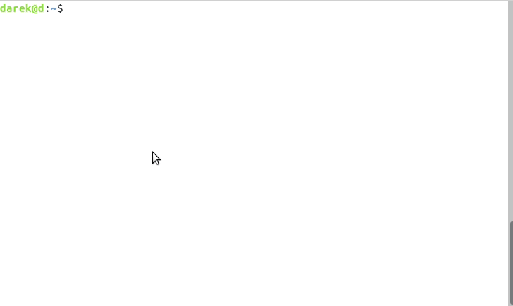
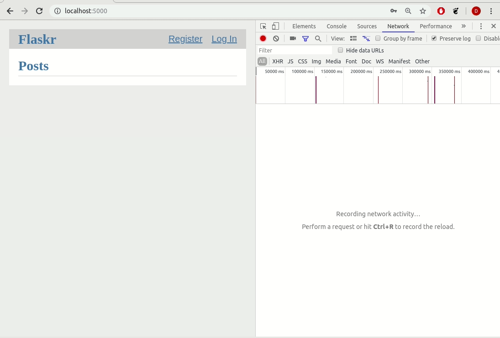
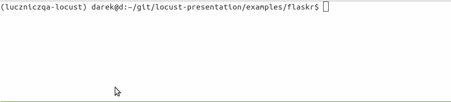
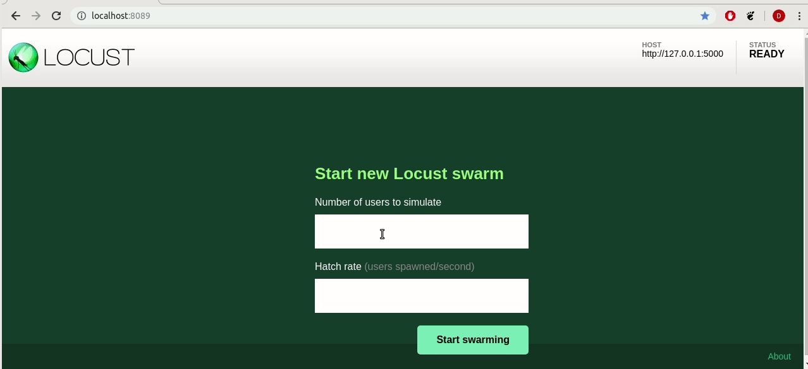

Darek Duleba
Software Engineer at Nokia
O mnie | ||
|---|---|---|
rodzina | 10-ty rok małżeństwa 2 synów - Filip i Damian | |
praca | 13-ty rok pracy
| Specjalizuje się w autmatyzacji testów i nie tylko |
sport | Triathlon
| początki zabawy z triathlonem |
open source | kontrybucje do radish-bdd wdna (webowe narzędzia wspierające analizy dna) locust_dockprom - dockprom + locust exporter |
- bierzący status na kwiecień 2019
Performance testing (Testy wydajnościowe)
- Proces testowania mający na celu określenie wydajności oprogramowania.
Testy_wydajnościowe_w_swiecie_microserwisów
Rodzaj testowania | Opis | Przypadki testowe w praktyce |
|---|---|---|
endurance (stabilności) | Skupienie na stabilności systemu w przedziala czasu Weryfikuje brak problemów z zasobami (np. wycieki pamięci, połącenia do bazy, pula wątków) | 72 godzinne testy przy stałym obciążeniu. scenariusze użytkowników bez przeciążania systemu |
stress (przeciążające) | Typ testowania wydajnościowego wykonywany, by określić jak system lub jego moduł pracuje na przewidywanej lub wyspecyfikowanej granicy lub poza nią lub też przy ograniczonym dostępie do pamięci lub serwera. | 5 minutowe testy skupiające się na konkretnym obszarze. Ich celem jest określenie maksymalnej wydajności przy ograniczonych zasobach |
Pozostałe rodzaje testowania wydajnościowego:
Load (obciążeniowe), Scalability (skalowalności), Spike, Concurrency (równoległości przetwarzania), Capacity
- Types of performance testing:
- Load Testing (Testowanie obciążeniowe)
- Stress Testing (Testowanie przeciążające)
- Scalability Testing (Testowanie skalowalności)
- Spike Testing
- Endurance Testing
- Concurrency Testing (testowanie równoległości przetwarzania)
- Capacity Testing
- Types of performance tests:
- static testing
- dynamic testing
- Performance Testing
Performance testing is an umbrella term including any kind of testing focused on performance (responsiveness) of the system or component under different volumes of load.
- Load Testing
Load testing focuses on the ability of a system to handle increasing levels of anticipated realistic loads resulting from transaction requests generated by controlled numbers of concurrent users or processes.
- Stress Testing
Stress testing focuses on the ability of a system or component to handle peak loads that are at or beyond the limits of its anticipated or specified workloads. Stress testing is also used to evaluate a system’s ability to handle reduced availability of resources such as accessible computing capacity, available bandwidth, and memory.
- Scalability Testing
Scalability testing focuses on the ability of a system to meet future efficiency requirements which may be beyond those currently required. The objective of these tests is to determine the system’s ability to grow (e.g., with more users, larger amounts of data stored) without violating the currently specified performance requirements or failing. Once the limits of scalability are known, threshold values can be set and monitored in production to provide a warning of problems which may be about to arise.. In addition the production environment may be adjusted with appropriate amounts of hardware.
- Spike Testing
Spike testing focuses on the ability of a system to respond correctly to sudden bursts of peak loads and return afterwards to a steady state.
- Endurance Testing
Endurance testing focuses on the stability of the system over a time frame specific to the system’s operational context. This type of testing verifies that there are no resource capacity problems (e.g., memory leaks, database connections, thread pools) that may eventually degrade performance and/or cause failures at breaking points.
- Concurrency Testing
Concurrency testing focuses on the impact of situations where specific actions occur simultaneously (e.g., when large numbers of users log in at the same time). Concurrency issues are notoriously difficult to find and reproduce, particularly when the problem occurs in an environment where testing has little or no control, such as production.
- Capacity Testing
Capacity testing determines how many users and/or transactions a given system will support and still meet the stated performance objectives. These objectives may also be stated with regard to the data volumes resulting from the transactions.
Narzędzia do testów wydajnościowych
Nazwa | Opis |
|---|---|
Open sourceowe narzędzie do generowania obciążenia. Potężne narzędzie z możliwością nagrywania ruchu webowego z kolorowymi raportami. | |
Open sourceowe narzędzie do generowania obciążenia. Umożliwia definicje zachowania użytkownika Scenariusze użytkownika w kodzie python'owym
| |
Rozwiązanie do monitorowania hostów oraz konterów Dockerowych | |
exporeter statystyk locusta dla Prometheus'a |
NOTE: Narzęzdia z których korzystamy w naszej grupie w bieżących projektach NOTE: Na potrzeby prezentacji udało mi się stworzyć ciekawy projeckt dockprom + locust_exporter = locust_dockprom
locust w virtualenvie
Tworzenie virtualenv'a - virtualenvwrapper
$ pip install virtualenv $ pip install virtualenvwrapper $ mkvirtualenv -p python3 locust (locust)$
Instalacja locusta
(locust)$ pip install locustio
Wczytanie virtualnego środowiska
$ source virtualenvwrapper.sh $ workon locust (locust)$ locust --help
dokumentacja instalacji_locusta
locust w dockerze
Docker file z locustio
FROM python:3.6.6-alpine3.8 RUN apk --no-cache add g++ \ && apk --no-cache add zeromq-dev \ && pip install locustio pyzmq EXPOSE 8089 5557 5558 ENTRYPOINT ["/usr/local/bin/locust"]
$ cd ~/git/locust/
$ docker build --tag locustio/locust .Docker z wykorzystaniem za pomocą exec'a
FROM locustio/locust WORKDIR /locust env PYTHONPATH /locust ENTRYPOINT [] CMD ["tail","-f","/dev/null"]
$ cd ~/git/locust-presentation/examples/packaging $ docker build --tag dduleba/locust . # to mount examples/flaskr/ we need to chage directory $ cd ~/git/locust-presentation $ docker run --restart unless-stopped \ --network host -d \ --name locustd -p 8089:8089 \ --mount src="$(pwd)",target=/locust,type=bind dduleba/locust

Monitorowanie
Opcja | detale | |||
|---|---|---|---|---|
Prometheus | tak | tak | Monitoring system & time series database | |
Grafana | tak | tak | The open platform for analytics and monitoring | |
cAdvisor | tak | tak | Analyzes resource usage and performance characteristics of running containers. | |
NodeExporter | tak | tak | Prometheus exporter for machine metrics | |
AlertManager | tak | tak | handles alerts sent by client applications such as the Prometheus server | |
locust exporter for prometheus | tak | tak | python library | |
locust exporter on docker | w odpowiednim forku | odporny na restarty locusta | ||
locust exporter with prometheus | tak | |||
locust exporter with grafana | tak |
locust_dockprom
Wybudowanie kontenera dla locust_exporter
git clone https://github.com/dduleba/locust_exporter.git
cd locust_exporter
docker build --tag locust_exporter .Wytartowanie locust_dockprom
git clone https://github.com/dduleba/locust-dockprom.git cd locust-dockprom # LOUST_HOST - LOCUST HOST ADDR (reachable from docker) export LOCUST_HOST=`ip -4 addr show scope global dev docker0 | grep inet | awk '{print \$2}' | cut -d / -f 1` docker-compose up -d

Test App

flask flaskr example
$ cd ~/git/ $ git clone https://github.com/dduleba/flask.git $ cd ~/git/flask/examples/tutorial/
$ export FLASK_APP=flaskr $ export FLASK_ENV=development $ flask init-db $ flask run
flaskr w dockerze
FROM python:3-alpine ADD . /app WORKDIR /app RUN pip install -e . ENV FLASK_APP flaskr ENV FLASK_ENV development RUN flask init-db ENTRYPOINT ["flask"] CMD ["run","--host","0.0.0.0"]
$ docker build --tag flaskr:alpine . $ docker run \ --cpus 1.0 \ --memory 4G \ --restart unless-stopped \ -d \ -p 5000:5000 \ --name flaskr \ flaskr:alpine
Przygotowanie zapytań

Przygotowanie zapytań
flaskr - przykładowy scenariusz
Requests - HTTP dla ludzi
from random import random import requests # Initial condition user_id = random() username = 'test_user_{}'.format(user_id) userpassword = 'test_user_pass_{}'.format(user_id) # Pobranie głównej strony session = requests.Session() r = session.get('http://localhost:5000/') print('get status code: ', r.status_code) print('get content: ', r.content) # rejestracja użytkownika - HTTP post request r = session.post('http://localhost:5000/auth/register', data={'username': username, 'password': userpassword}) print('register status code: ', r.status_code) r = session.post('http://localhost:5000/auth/login', data={'username': username, 'password': userpassword}) print('login status code: ', r.status_code) print('login cookies: ', session.cookies) r = session.post('http://localhost:5000/create', data={'title': 'post example by {}'.format(username), 'body': 'witam na ŁuczniczQA meetup'}) print('post add status code: ', r.status_code)
Get request
skrypt
session = requests.Session() r = session.get('http://localhost:5000/') print('get status code: ', r.status_code)
locust
Każda instancja TaskSet'a (HTTPLocust'a) zawiera atrybut client HttpSession. Klasa HttpSession dziedziczy z requests.Session
from locust import HttpLocust, TaskSet, task class IndexTaskSet(TaskSet): @task() def index(self): self.client.get("/") class IndexLocust(HttpLocust): task_set = IndexTaskSet min_wait = 5000 max_wait = 10000 host='http://127.0.0.1:5000'
Uruchomienie locusta - virtualenv
$ workon locust
$ cd ~/git/locust-presentation/examples/flaskr/posts_list
$ locustPost request
# rejestracja użytkownika - HTTP post request r = session.post('http://localhost:5000/auth/register', data={ 'username': username, 'password': userpassword }) print('register status code: ', r.status_code)
from locust import HttpLocust, TaskSet, task class UserRegisterTaskSet(TaskSet): def on_start(self): self.prefix = id(self) self.user_id = 0 print(self.prefix) @staticmethod def user_register(client, user_name, user_password): client.post( "/auth/register", data={ 'username': user_name, 'password': user_password } ) @task() def register(self): self.user_id += 1 user_name = 'test_user_{}'.format(self.prefix, self.user_id) user_password = 'test_user_password_{}'.format(self.user_id) self.user_register(self.client, user_name, user_password) class IndexLocust(HttpLocust): task_set = UserRegisterTaskSet min_wait = 5000 max_wait = 10000 host = 'http://127.0.0.1:5000'
Uruchomienie locusta - docker exec
- Kontener locustd musi być uruchomiony
- docker run ..
- po przekazaniu argumentu --restart unless-stopped nie musimy już o tym pamiętać
- montujemy źródła testów do katalogu /locust
- kontener zawiera PYTHONPATH do katalogu /locust
- daje to możliwość z korzystania z package'a w naszym przypadku examples
$ cd ~/git/locust-presentation $ docker run --restart unless-stopped \ --network host -d \ --name locustd -p 8089:8089 \ --mount src="$(pwd)",target=/locust,type=bind dduleba/locust
Zatrzymanie poprzedniego run'u locust'a
docker exec locustd pkill -f locustUruchomienie locusta
docker exec locustd locust -f examples/flaskr/user_all_actions/locustfile.pyTask sequence
from examples.flaskr.user_add_post.locustfile import UserAddPostTaskSet from examples.flaskr.user_login.locustfile import UserLoginTaskSet from examples.flaskr.user_register.locustfile import UserRegisterTaskSet from examples.flaskr.utils import _get_post_id from locust import HttpLocust, TaskSequence, seq_task class UserDeletePostTaskSet(TaskSequence): def on_start(self): user_id = id(self) self.user_name = 'test_user_{}'.format(user_id) self.user_password = '{}x'.format(self.user_name) UserRegisterTaskSet.user_register(client=self.client, user_name=self.user_name, user_password=self.user_password) UserLoginTaskSet.user_login(client=self.client, user_name=self.user_name, user_password=self.user_password) self.post_id = None @seq_task(1) def add_post(self): title = '{}: title'.format(self.user_name) body = "to be deleted" response = UserAddPostTaskSet.user_add_post(client=self.client, title=title, body=body, catch_response=True) self.post_id = _get_post_id(content=response.content) @seq_task(2) def delete(self): if self.post_id is None: return self.client.post( '/{post_id}/delete'.format(post_id=self.post_id), name='/[post_id]/delete' ) self.post_id = None class IndexLocust(HttpLocust): task_set = UserDeletePostTaskSet min_wait = 5000 max_wait = 10000 host = 'http://127.0.0.1:5000'
Połączenie kilku requestów w całość
from examples.flaskr.posts_list.locustfile import IndexTaskSet from examples.flaskr.user_add_post.locustfile import UserAddPostTaskSet from examples.flaskr.user_delete_post.locustfile import UserDeletePostTaskSet from examples.flaskr.user_edit_post.locustfile import UserEditPostTaskSet from examples.flaskr.user_login.locustfile import UserLoginTaskSet from examples.flaskr.user_register.locustfile import UserRegisterTaskSet from locust import HttpLocust, TaskSet class UserAllTaskSet(TaskSet): tasks = {UserEditPostTaskSet: 4, UserAddPostTaskSet: 4, UserDeletePostTaskSet: 3, UserLoginTaskSet: 2, UserRegisterTaskSet: 1, IndexTaskSet: 8} class IndexLocust(HttpLocust): task_set = UserAllTaskSet min_wait = 5000 max_wait = 10000 host = 'http://127.0.0.1:5000'
Locust Master/Slave
To start locust in master mode:
$ locust -f my_locustfile.py --master
And then on each slave (replace 192.168.0.14 with IP of the master machine):
$ locust -f my_locustfile.py --slave --master-host=192.168.0.14
Definicja własnego klient'a
locust_testing_other_systems_using_custom_client
import logging import random import time from locust import Locust, TaskSet, events, task log = logging.getLogger() class LoggingClient(object): def __getattr__(self, name): def wrapper(*args, **kwargs): start_time = time.time() try: time.sleep(1 / random.randint(100, 1000)) method = getattr(log, name) result = method(*args, **kwargs) except Exception as e: total_time = int((time.time() - start_time) * 1000) events.request_failure.fire(request_type="log", name=name, response_time=total_time, exception=e) else: total_time = int((time.time() - start_time) * 1000) events.request_success.fire(request_type="log", name=name, response_time=total_time, response_length=0) return wrapper class LoggingLocust(Locust): def __init__(self, *args, **kwargs): super().__init__(*args, **kwargs) self.client = LoggingClient() class ApiUser(LoggingLocust): min_wait = 100 max_wait = 1000 class task_set(TaskSet): @task(10) def error(self): self.client.error("error info") @task(5) def info(self): self.client.info("Test Info")